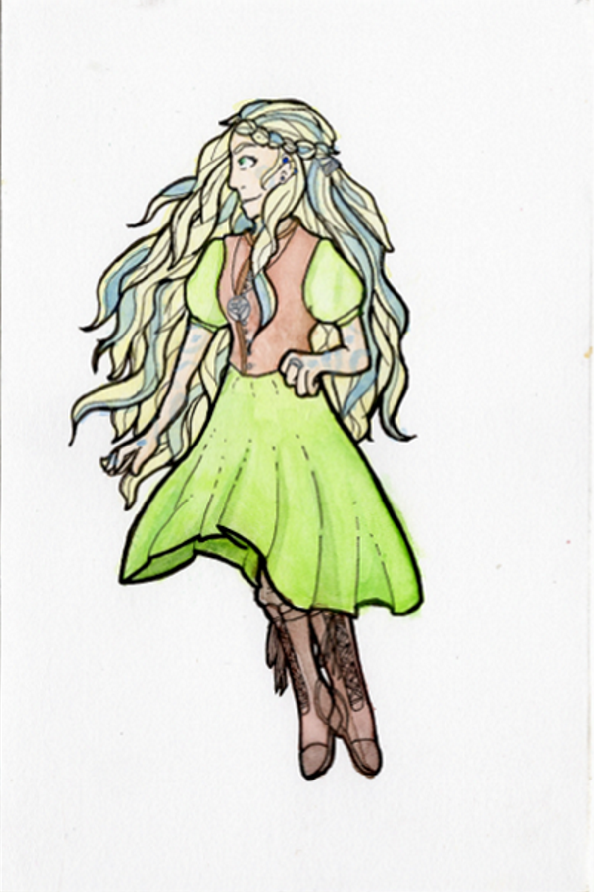

A little about Kiki and these images.
Kiki is very special to me. She represents a lot of promise, a lot of possibilities. She is a beacon of hope in dark days as a reminder of what I can accomplish. She's the reason for a lot of who I am, including how I started questioning and coming to terms with my own gender identity. She's carefree, curious and capable. The kind of girl who can see something, decide to do something with it and actually do it.
Neither of these images were created by me, but were in fact made by two very good friends. The one who did the one on the left, Tara, I am no longer in contact with unfortunately. But the one who did the one on the right, Cass, I still speak to quite often and even share two TTRPG games with her.
Can you tell which one came first? The answer is in the footer.
